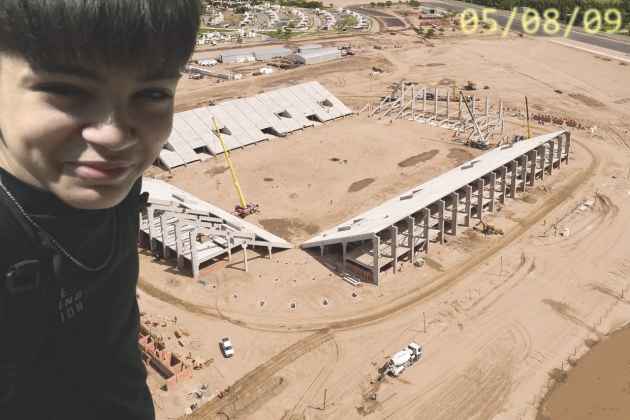
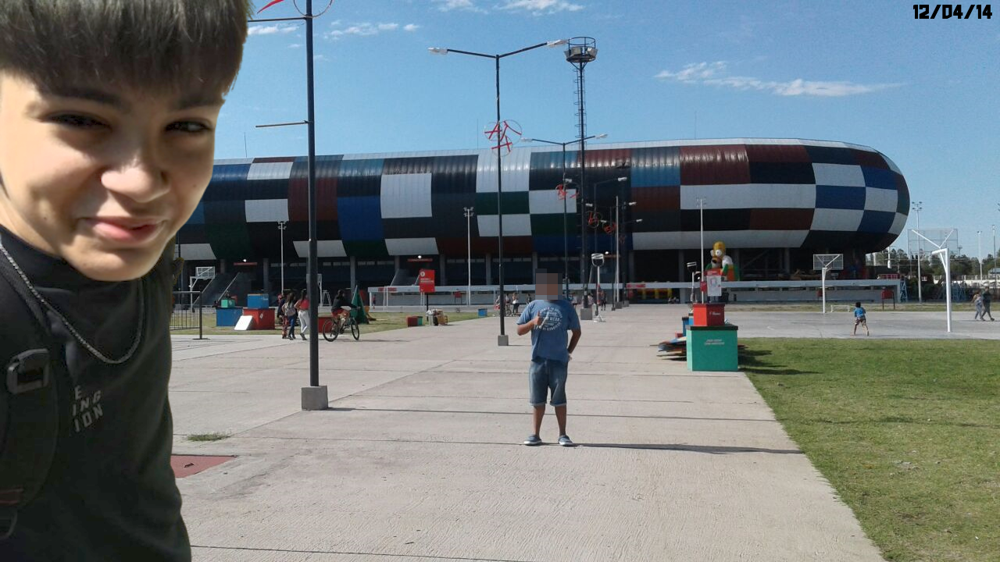

Club Atlético Fuerzas Especiales
El mejor peor club de toda Argentina (y seguirá así)
Nuestra Historia
Todo empezó en el año 1523 cuando Lautaro Pavetti decidió fundar el "Club Sportivo Fuerzas Especiales" cerca de una polleria llamada "Polleria Manolo", siendo ese el Primer patrocinador del Club.
Desde el 1842 hasta la actualidad, Lautaro Pavetti ha tomado el mando del club y lo ha renombrado a "Club Atletico Fuerzas Especiales". Ganaron 4 Libertadores, 3 Sudamericanas, 2 Mundiales de Clubes y una Intercontinental en total. En el 2016, el club recibió el premio al "Mejor club de Todos los Tiempos" en los premios especiales Willyrex. Hoy en dia el plantel ya no se ubica cerca de esa polleria, ahora se ubica debajo de La Pedrera. Para acceder a él hay que ingresar desde los canales que tiene el estadio y desplazarse en él hasta encontrar el plantel.

Construccion del Estadio (Él mismo construyó el estadio con el modo creativo) Para ese momento, la cancha debajo de la pedrera ya habia sido construido junto con la entrada que era un tunel de tierra que iba directo a la cancha. Agosto 2009

Una foto de Lautaro Pavetti en La Pedrera con un fisura que habia por ahí que también era hincha del Fuerzas Especiales. Abril 2014